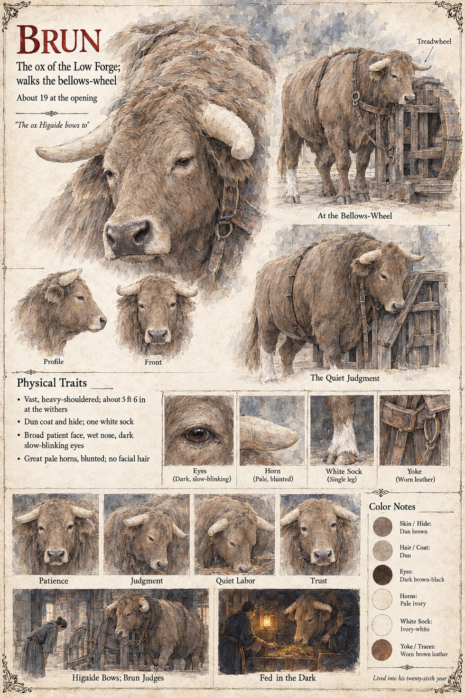

Brun
Ox of the Low Forge, walks the bellows-wheel · one white sock · died in his twenty-sixth year
A vast, dun, patient ox with one white sock and a habit of leaning against the wheel's rim when he is thinking, who walks the treadwheel that drives the bellows of the Low Forge. Ansbert warms his mash with his own hands on cold mornings, and in the crucible method that the household stumbles on he is the engine: six hours of walking without pause to bring a clay pot to white heat. When a tall stranger on the Hohlweg turns from the cart-boy to bow to him, a full bow from the waist with the hands flat on the thighs, held for a breath, he lowers his great head until the wet nose is a hand's breadth from the man's chest and exhales noisily into his tunic. The boy, who has once seen the same animal knock down a cooper, understands that a judgment has been rendered. The stranger, Tomobe no Higaide, lies down that night in the straw beside his warm flank. It is the bow he made nineteen years before, in Case 2231, to the red ox Lo Rog of the Mill of the Two Weirs.
The Middle Town copies him. By Kerren eleven forges have acquired oxen, and one has a white sock painted on with lime and is found by a rival to have lost it in the rain. The Countess Adalgund asks his name, lays a bare hand flat on his flank for rather longer than courtesy requires, and on a later visit tells him that she does not want it; Hiltrude's answer is that nobody who wanted it would have asked the ox's name. When Higaide leaves the forge in the night, the ox stands with his head turned toward the road and does not eat; Hiltrude sets a bowl of broth on the sill of the stall window, and again at dusk on the six evenings that follow, and it is empty on the sixth morning. It is a long time before anyone in the Low Forge learns that it was the ox. He is left behind when the household slips out on the twenty-seventh of Mavren, since a beast of that bulk cannot be taken through a gate full of the Low Market in the dark. On the night of the Uncounted Day his low, hollow groan, like the door of a barn, goes through the apprentice Lantfrid as the Duke's guards take him by the arms, and sets the boy running for the bridge. Higaide bows to the boy and then, slowly, to the ox over the partition, and to the cold hearth and the anvil. Later, when the foreigner carries the boy's body up the steep lanes of the Middle Town, the ox's slow hoofs fall behind him on the cobbles; and Hiltrude's words at the boy's side are Feed the ox.
He lives six years more in the wheel, is pensioned to a Queen who has asked for him in the plainest words, and stands out the rest of his time in the lee of a south wall at Eschwin, where the vines come down to the river, with his great head turned toward a road, until his death in his twenty-sixth year with her scarred hand on his flank. There is a stall for him in the yard of the Order's Hall in which nobody is ever put, and the seal of the Order is a hanging sack above the head of an ox. For four days in the almonry yard he had been fed oats by a Hierarch's sexton, whom his sheet draws as the sexton of the bell-loft. The manuscript gives the dun coat, the white sock, the leaning and the death in his twenty-sixth year; the sheet's height of about 5 ft 6 in at the withers, pale blunted horns, dark slow-blinking eyes and worn yoke are its own, as are its captions The Quiet Judgment and Fed in the Dark and its line The ox Higaide bows to. It also gives his age as about 19 at the opening, which does not fit the manuscript's three years in the wheel and six more after them, followed by a death in his twenty-sixth year; the page reports both and does not reconcile them.
“Feed the ox.”
Appears In

Related Subjects


Related Records

In the fog of the Hohlweg, Tomobe no Higaide bows from the waist with his hands flat on his thighs to the ox Brun, who lowers his great head until his wet nose is a hand's breadth from the stranger's chest and breathes out into his tunic; the cart-boy, presumably Lantfrid, watches open-mouthed. It is the bow that the ox Lo Rog was given in Case 2231.

The powder goes into the crucible by accident: Lantfrid, frozen mid-stroke, has swept it off the anvil's edge with the besom held under his right elbow, while Ansbert tends the fire with his back turned and Higaide lowers his eyes in tact beside Brun at the treadwheel.

On the Uncounted night the Grey Lances sit in the mud before the Low Forge with their spears grounded, and Hagen Brandt sits on the threshold with two swords laid beside him, hilts to the road; Higaide stands bareheaded in the doorway with empty hands, bowing, with Lantfrid and the ox Brun behind him. We are nobody's, says the captain, and we are sitting.